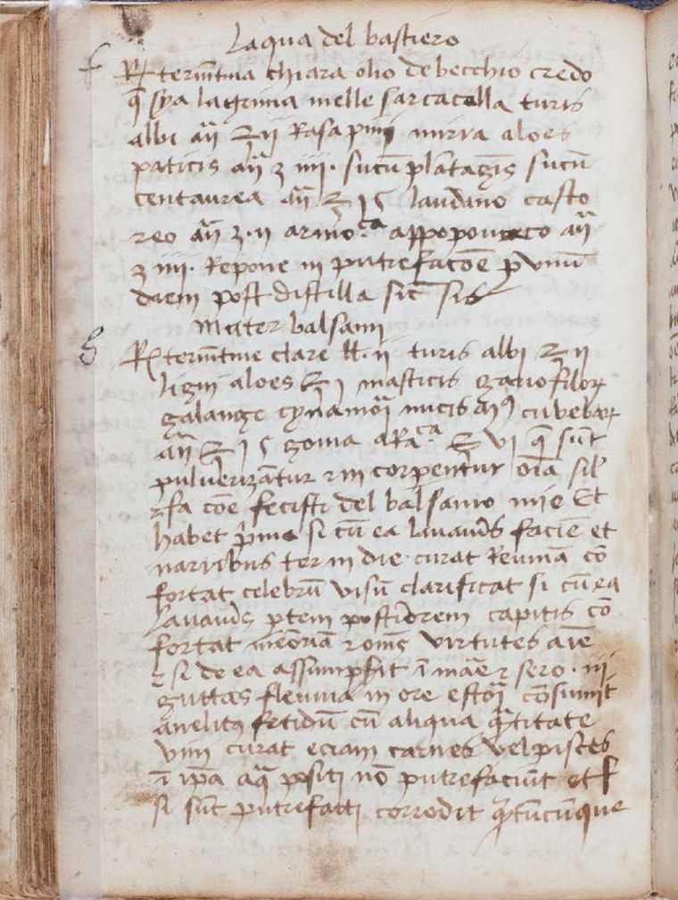
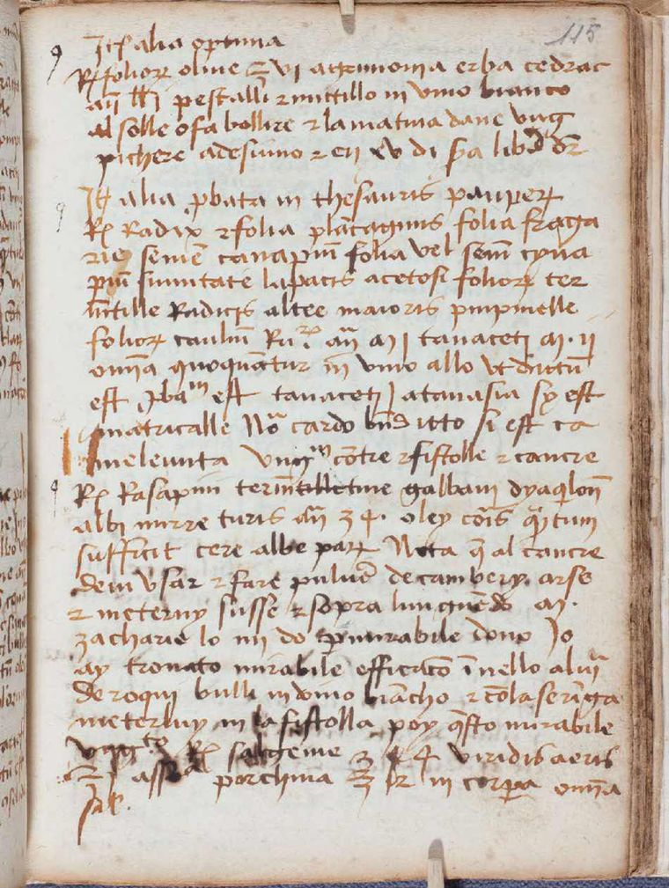
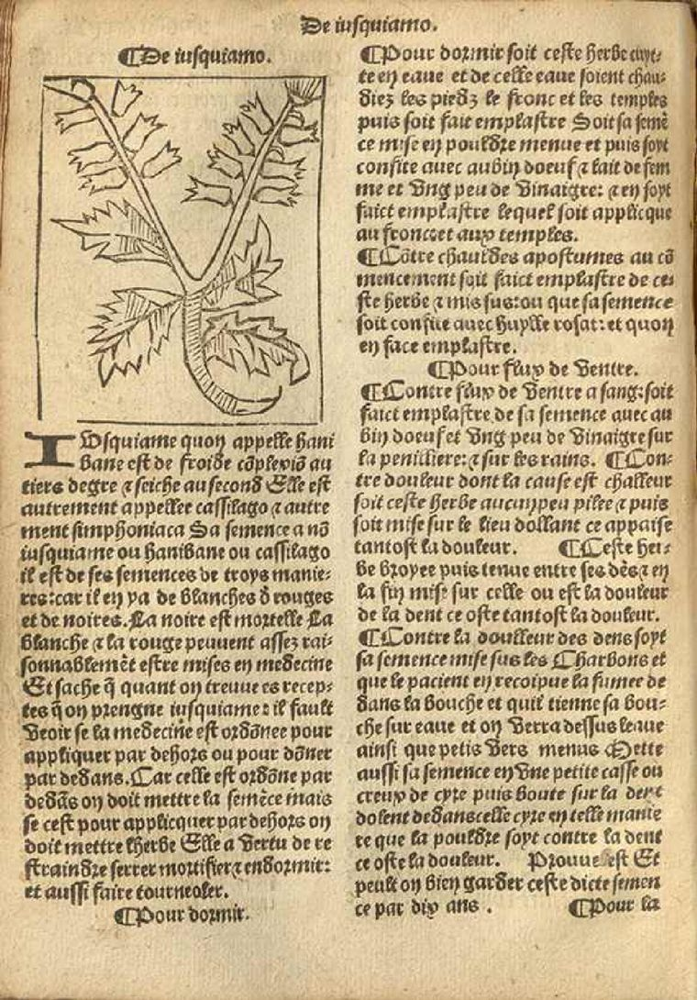
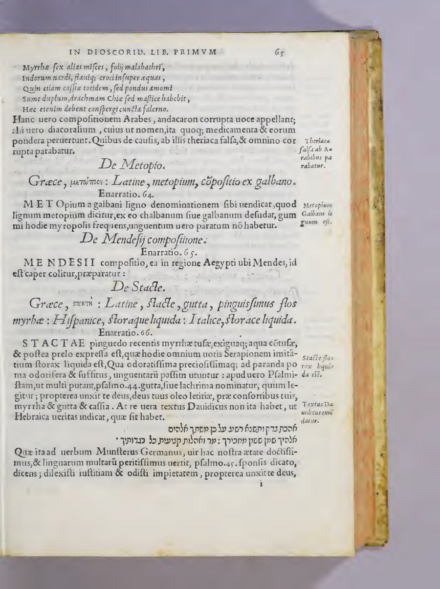
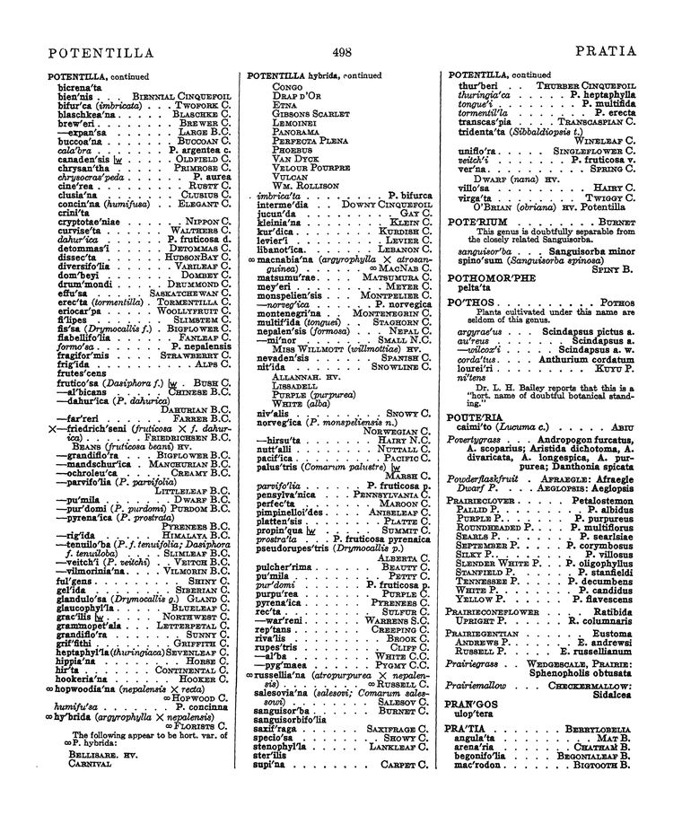

WHL · Historical Herbal & Materia-Medica Library
Library
Thirteen works, nineteen witnesses — from the Ebers Papyrus to twentieth-century pharmacognosy. Every page streamed, every witness compared.
Landmarks

Landmark c. 1550 BC · Thebes
Papyrus Ebers
The oldest substantially complete pharmacological text: 110 columns of prescriptions, from myrrh plasters to remedies of the eye.
2 witnesses: papyrus + Joachim 1890 translation

Landmark 1578 · China
Ben Cao Gang Mu 本草綱目
The great synthesis of Chinese materia medica — 1,892 drug entries across 52 juan, each with names, provenance, and formulae.
1888 Hongbaozhai edition

Landmark 1st c. AD · Anatolia
Dioscorides, De materia medica
The spine of Western pharmacy for fifteen centuries — read here through its Renaissance translators and commentators.
2 versions · 3 items
Works


 ×3
×3
Herbal, anonymous (Yale, Cushing MS 49)

Hortus Sanitatis

Regimen Sanitatis Salernitanum

 ×2
×2
Le grant herbier en francoys

Banckes’s Herbal

 ×2
×2
In Dioscoridis enarrationes

The English Physitian

The Extemporaneous Dispensatory

The Chemistry of Essential Oils, I

Standardized Plant Names

Zhongyao da cidian 中药大辞典, vol. 2
No works match these filters — clear them.